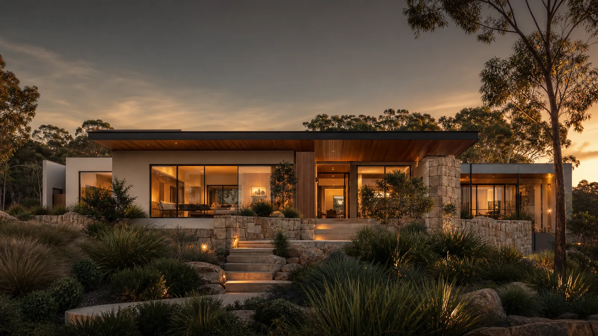
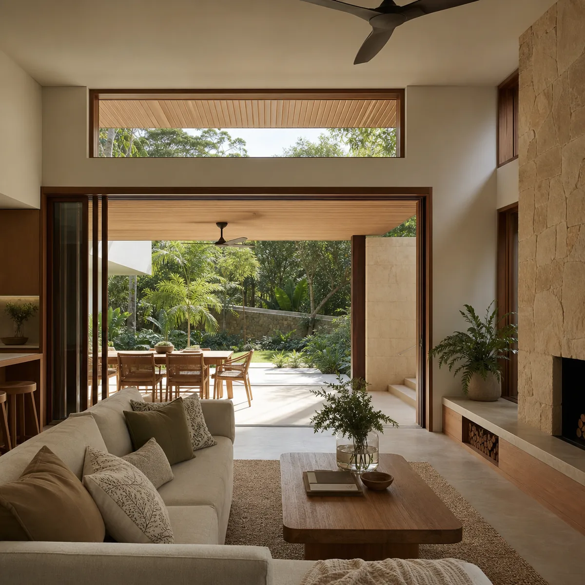
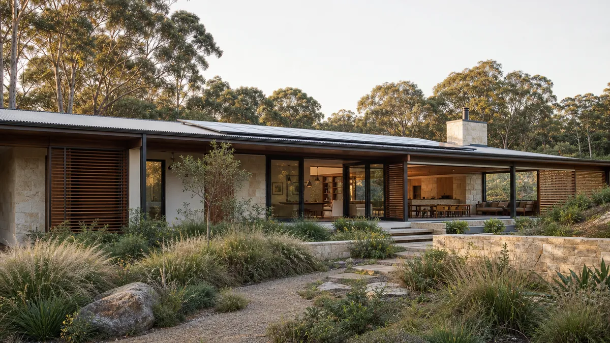
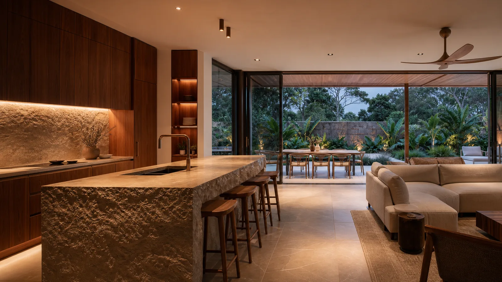
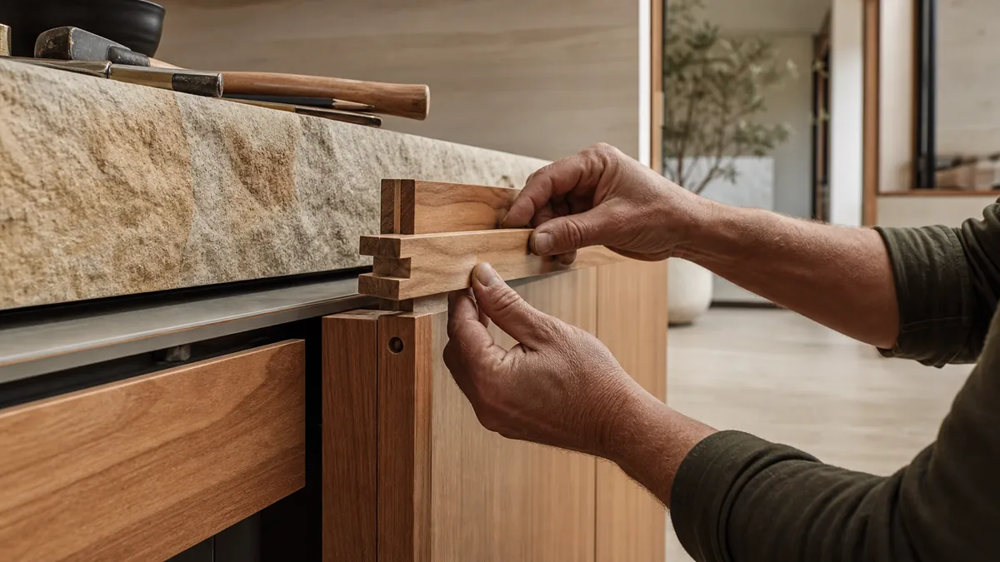
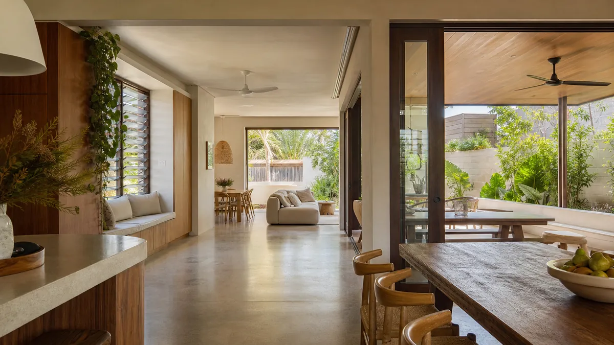

Each section uses a genuinely different mechanism — clip-path, SVG filters, 3D transforms, CSS masks and channel separation. They fire once on scroll; hit Replay on any of them to run it again.
Scroll





Pick the ones you want and I'll port them into the React components. Every
timing value lives in the T object at the top of the script.